# creating graphs in Python
import networkx as nx
# calling git commands
import subprocess
# checking for existence of paths, and manipulating paths
from pathlib import PathExploring extraction of commit graphs from Git repositories, and examining their shape and stats
This is appendix for chapter
09_git.ipynb
Necessary imports
Cloning git.git repository, and extracting and saving the commit graph
Why it is important to use sparse clone - it is much faster, and takes up less space. For example for git.git repository we have the following (all times are wall time, and subject to interference from other CPU load): - full clone: 54s - mirror: 1min 19s - sparse: 14.9s - 19.4s
Prepare the directory to store repositories (note: mkdir -d <directory> should show no error if <directory> exists, but it is not portable).
Clone example repository (for exploration). Might give errors if repository already exists.
# create the directory to store cloned repositories, if it does not exist
Path("repos").mkdir(exist_ok=True)!git -C repos clone --mirror --filter=tree:0 --quiet https://github.com/git/git.gitWall time: 1.05 sfatal: destination path 'git.git' already exists and is not an empty directory.Extract the history of the project
# create the directory to store datasets
Path("datasets").mkdir(exist_ok=True)!git -C repos/git.git log --format="%h %p" --topo-order --branches >datasets/git-commit_graph.adjlist.txtWall time: 6.81 sIt takes a few seconds on a laptop with HDD to extract the commit graph (for all branches), storing results in a git-commit_graph.adjlist.txt text file in the adjacent list format in datasets/ subdirectory
graph_git = nx.read_adjlist("datasets/git-commit_graph.adjlist.txt", create_using=nx.DiGraph)Wall time: 663 msIt takes less than a second to create NetworkX graph for a commit graph
print('commit-graph of git repository graph has {} nodes and {} edges'.format(
graph_git.number_of_nodes(),
graph_git.number_of_edges()))
print('is directed: {}'.format(graph_git.is_directed()))
print('is DAG: {}'.format(nx.is_directed_acyclic_graph(graph_git)))
print('example nodes: {}'.format(list(graph_git.nodes)[:5]))commit-graph of git repository graph has 63829 nodes and 79664 edges
is directed: True
is DAG: True
example nodes: ['836aadd78', 'a93475d10', '55fce44a3', '6d9d59c31', '084bd2a9a']# compress403 ms ± 32 ms per loop (mean ± std. dev. of 7 runs, 1 loop each)It takes around 0.6-0.8 seconds to write it back gzip-compressed in the adjacency list format as git-commit_graph.adjlist.txt.gz
Testing different graph output formats
#%%time
#nx.write_graph6(graph_git, 'datasets/git-commit_graph.g6')It turns out that the graph6 / sparse6 format is not a good choice for storing the commit graph for the following reasons: - NetworkX does not support digraph6 format; neither write_graph6 not write_sparse6 are implemented for directed graphs - the digraph6 format is dense graph format, storing the encoded adjacency matrix; there is no disparse6 or digraph6sparse format - SparseGraph6 formats do not store node/vertex names, which might be needed for future computations or visualizations
import pickleprint('edgelist.txt: ', end=' ', flush=True)
print('multiline_adjlist.txt: ', end=' ', flush=True)
print('edgelist.txt.gz: ', end=' ', flush=True)
print('multiline_adjlist.txt.gz:', end=' ', flush=True)
print('gexf.gz: ', end=' ', flush=True)
print('graphml.gz: ', end=' ', flush=True)
print('pajek.gz: ', end=' ', flush=True)edgelist.txt: Wall time: 244 ms
multiline_adjlist.txt: Wall time: 186 ms
edgelist.txt.gz: Wall time: 819 ms
multiline_adjlist.txt.gz: Wall time: 1.06 s
gexf.gz: Wall time: 5.34 s
graphml.gz: Wall time: 5.01 s
pajek.gz: Wall time: 3.14 s#print('gpickle.gz: ', end=' ', flush=True)
#%time nx.write_gpickle(graph_git, 'datasets/git-commit_graph.gpickle.gz') # removed in NetworkX 3.xgpickle.gz: print('gpickle.gz: ', end=' ', flush=True)
with open('datasets/git-commit_graph.gpickle.gz', 'wb') as f:
pickle.dump(graph_git, f, pickle.HIGHEST_PROTOCOL)gpickle.gz: Wall time: 273 msimport pandas as pdgraph_git_df = nx.to_pandas_edgelist(graph_git)
graph_git_df| source | target | |
|---|---|---|
| 0 | 836aadd78 | a93475d10 |
| 1 | 836aadd78 | 55fce44a3 |
| 2 | a93475d10 | df525e622 |
| 3 | 55fce44a3 | 6d9d59c31 |
| 4 | 6d9d59c31 | 084bd2a9a |
| ... | ... | ... |
| 79659 | 24778e335 | 19b2860cb |
| 79660 | 19b2860cb | bf0c6e839 |
| 79661 | bf0c6e839 | e497ea2a9 |
| 79662 | e497ea2a9 | 8bc9a0c76 |
| 79663 | 8bc9a0c76 | e83c51633 |
79664 rows × 2 columns
graph_git_df.to_pickle('datasets/git-commit_graph.df_edgelist.pickle.gz')Wall time: 1.07 sgraph_git_df.to_csv('datasets/git-commit_graph.df_edgelist.csv.gz')Wall time: 1.04 sBoth to_feather() and to_parquet() need pyarrow module installed (the latter might use fastparquet instead)
try:
graph_git_df.to_feather('datasets/git-commit_graph.df_edgelist.feather')
except ImportError:
print("Missing optional dependency 'pyarrow' required to save dataframe to the feather format")Wall time: 587 mstry:
graph_git_df.to_parquet('datasets/git-commit_graph.df_edgelist.parquet')
except ImportError:
print("Missing optional dependency 'pyarrow' or 'fastparquet' required to save dataframe to the parquet format")Wall time: 1.18 sto_hdf() needs tables module installed (PyTables).
try:
graph_git_df.to_hdf('datasets/git-commit_graph.df_edgelist.hdf5', 'df_edgelist', mode='w', complevel=6)
except ImportError:
print("Missing optional dependency 'table' required to save dataframe to the HDF5 format")Wall time: 2.6 sComparing the filesize of different graph output formats
Previously !dir datasets was used, but - it is not portable (on Linux it only lists files, instead of showing among others file size information) - on MS Windows where it works for this purpose, it includes unnecessary information
["{name:<50} {size:>7}".format(name=p.name,size=p.stat().st_size) for p in Path("datasets").glob("git*.gz")]['git-commit_graph-df_reachability_sample.csv.gz 338527',
'git-commit_graph.adjlist.txt.gz 581624',
'git-commit_graph.df_edgelist.csv.gz 808989',
'git-commit_graph.df_edgelist.pickle.gz 668474',
'git-commit_graph.df_nodedata.csv.gz 773957',
'git-commit_graph.edgelist.txt.gz 606109',
'git-commit_graph.gexf.gz 1524987',
'git-commit_graph.gpickle.gz 3851388',
'git-commit_graph.graphml.gz 1109122',
'git-commit_graph.info.csv.gz 1785780',
'git-commit_graph.info.pickle.gz 1467752',
'git-commit_graph.multiline_adjlist.txt.gz 638575',
'git-commit_graph.pajek.gz 876408']["{name:<50} {size:>7}".format(name=p.name,size=p.stat().st_size) for p in Path("datasets").glob("git*") if not p.match("*.gz")]['git-commit_graph.adjlist.txt 1434939',
'git-commit_graph.df_edgelist.csv 4383858',
'git-commit_graph.df_edgelist.feather 1918282',
'git-commit_graph.df_edgelist.hdf5 2421869',
'git-commit_graph.df_edgelist.parquet 1617488',
'git-commit_graph.edgelist.txt 1832272',
'git-commit_graph.hdf5 3803473',
'git-commit_graph.info.hdf5 1382956',
'git-commit_graph.info.parquet 3164039',
'git-commit_graph.multiline_adjlist.txt 1801780']
Note
the information below was gathered for git log --all, not git log --branches as it is done now, so the exact sizes will be different
import io
csv = u"""filename;size [bytes];size uncompressed [bytes];time [s]
git-commit_graph.adjlist.txt;2875179;2875179
git-commit_graph.adjlist.txt.gz;1173712;2875369;0.910
git-commit_graph.multiline_adjlist.txt;3610938;3610938;0.456
git-commit_graph.edgelist.txt;3692282;3692282;0.624
git-commit_graph.gpickle.gz;3254690;7712162;4.92
git-commit_graph.gexf.gz;3063783;16419236;9.49
git-commit_graph.graphml.gz;2231397;10305482;4.74
git-commit_graph.pajek.gz;1754236;6682509;6.74
git-commit_graph.df_edgelist.pickle.gz;1332691;2736191;1.9
git-commit_graph.df_edgelist.feather;3857818;3857818;0.487
git-commit_graph.df_edgelist.parquet;3116020;3116020;0.333
git-commit_graph.df_edgelist.csv;4383858;4383858
git-commit_graph.df_edgelist.csv.gz;1629263;4383858;1.2
git-commit_graph.df_edgelist.hdf5;3808521;5077784;0.244
"""
csv_stream = io.StringIO(csv)
table_sizes=pd.read_csv(csv_stream,sep=';') # ,index_col=0
table_sizes| filename | size [bytes] | size uncompressed [bytes] | time [s] | |
|---|---|---|---|---|
| 0 | git-commit_graph.adjlist.txt | 2875179 | 2875179 | NaN |
| 1 | git-commit_graph.adjlist.txt.gz | 1173712 | 2875369 | 0.910 |
| 2 | git-commit_graph.multiline_adjlist.txt | 3610938 | 3610938 | 0.456 |
| 3 | git-commit_graph.edgelist.txt | 3692282 | 3692282 | 0.624 |
| 4 | git-commit_graph.gpickle.gz | 3254690 | 7712162 | 4.920 |
| 5 | git-commit_graph.gexf.gz | 3063783 | 16419236 | 9.490 |
| 6 | git-commit_graph.graphml.gz | 2231397 | 10305482 | 4.740 |
| 7 | git-commit_graph.pajek.gz | 1754236 | 6682509 | 6.740 |
| 8 | git-commit_graph.df_edgelist.pickle.gz | 1332691 | 2736191 | 1.900 |
| 9 | git-commit_graph.df_edgelist.feather | 3857818 | 3857818 | 0.487 |
| 10 | git-commit_graph.df_edgelist.parquet | 3116020 | 3116020 | 0.333 |
| 11 | git-commit_graph.df_edgelist.csv | 4383858 | 4383858 | NaN |
| 12 | git-commit_graph.df_edgelist.csv.gz | 1629263 | 4383858 | 1.200 |
| 13 | git-commit_graph.df_edgelist.hdf5 | 3808521 | 5077784 | 0.244 |
table_sizes.dtypesfilename object
size [bytes] int64
size uncompressed [bytes] int64
time [s] float64
dtype: objecttable_sizes.sort_values(by='size [bytes]')| filename | size [bytes] | size uncompressed [bytes] | time [s] | |
|---|---|---|---|---|
| 1 | git-commit_graph.adjlist.txt.gz | 1173712 | 2875369 | 0.910 |
| 8 | git-commit_graph.df_edgelist.pickle.gz | 1332691 | 2736191 | 1.900 |
| 12 | git-commit_graph.df_edgelist.csv.gz | 1629263 | 4383858 | 1.200 |
| 7 | git-commit_graph.pajek.gz | 1754236 | 6682509 | 6.740 |
| 6 | git-commit_graph.graphml.gz | 2231397 | 10305482 | 4.740 |
| 0 | git-commit_graph.adjlist.txt | 2875179 | 2875179 | NaN |
| 5 | git-commit_graph.gexf.gz | 3063783 | 16419236 | 9.490 |
| 10 | git-commit_graph.df_edgelist.parquet | 3116020 | 3116020 | 0.333 |
| 4 | git-commit_graph.gpickle.gz | 3254690 | 7712162 | 4.920 |
| 2 | git-commit_graph.multiline_adjlist.txt | 3610938 | 3610938 | 0.456 |
| 3 | git-commit_graph.edgelist.txt | 3692282 | 3692282 | 0.624 |
| 13 | git-commit_graph.df_edgelist.hdf5 | 3808521 | 5077784 | 0.244 |
| 9 | git-commit_graph.df_edgelist.feather | 3857818 | 3857818 | 0.487 |
| 11 | git-commit_graph.df_edgelist.csv | 4383858 | 4383858 | NaN |
table_sizes.sort_values(by='size uncompressed [bytes]')| filename | size [bytes] | size uncompressed [bytes] | time [s] | |
|---|---|---|---|---|
| 8 | git-commit_graph.df_edgelist.pickle.gz | 1332691 | 2736191 | 1.900 |
| 0 | git-commit_graph.adjlist.txt | 2875179 | 2875179 | NaN |
| 1 | git-commit_graph.adjlist.txt.gz | 1173712 | 2875369 | 0.910 |
| 10 | git-commit_graph.df_edgelist.parquet | 3116020 | 3116020 | 0.333 |
| 2 | git-commit_graph.multiline_adjlist.txt | 3610938 | 3610938 | 0.456 |
| 3 | git-commit_graph.edgelist.txt | 3692282 | 3692282 | 0.624 |
| 9 | git-commit_graph.df_edgelist.feather | 3857818 | 3857818 | 0.487 |
| 11 | git-commit_graph.df_edgelist.csv | 4383858 | 4383858 | NaN |
| 12 | git-commit_graph.df_edgelist.csv.gz | 1629263 | 4383858 | 1.200 |
| 13 | git-commit_graph.df_edgelist.hdf5 | 3808521 | 5077784 | 0.244 |
| 7 | git-commit_graph.pajek.gz | 1754236 | 6682509 | 6.740 |
| 4 | git-commit_graph.gpickle.gz | 3254690 | 7712162 | 4.920 |
| 6 | git-commit_graph.graphml.gz | 2231397 | 10305482 | 4.740 |
| 5 | git-commit_graph.gexf.gz | 3063783 | 16419236 | 9.490 |
Summary of findings
Storing DataFrame of edgelist data
The DataFrame is created using nx.to_pandas_edgelist(graph)
The smallest file is the result of storing DataFrame of edgelist data as gzipped pickle (written using Pandas’ to_pickle()) - the *.df_edgelist.pickle.gz file.
- Advantages:
- 2nd smallest size
- no extra modules to install
- preserves types
- Disadvantages:
- Python-specific
- unsafe
- slow (?)
Next smallest is, surprisingly, gzipped CSV representing DataFrame of edgelist data (written using Pandas’ to_csv()) - the *.df_edgelist.csv.gz file.
- Advantages:
- 3rd smallest size
- no extra modules to install
- universal format
- Disadvantages:
- slow (?)
The fast interchange formats, Feather and Parquet turned out to produce quite large files; they are however 4th smallest and 2nd smallest, respectively, among uncompressed formats.
Feather provides a binary columnar serialization for data frames. It is designed to make reading and writing data frames efficient, and to make sharing data across data analysis languages easy.
Feather is designed to faithfully serialize and de-serialize DataFrames, supporting all of the pandas dtypes, including extension dtypes such as categorical and datetime with tz.
Apache Parquet provides a partitioned binary columnar serialization for data frames. It is designed to make reading and writing data frames efficient, and to make sharing data across data analysis languages easy. Parquet can use a variety of compression techniques (default is to use ‘snappy’) to shrink the file size as much as possible while still maintaining good read performance.
Parquet is designed to faithfully serialize and de-serialize DataFrames, supporting all of the pandas dtypes, including extension dtypes such as datetime with tz.
- Advantages:
- universal, cross language
- preserves types
- fast
- support for CUDA
- Disadvantages:
- requires
pyarrowpackage to be installed - quite large file size
- requires
The HDF5 format has the advantage of being able to store multiple DataFrames in a single file, for example one DataFrame to hold edgelist data to define the graph connections, and one DataFrame holding various per vertex (per node) rechablity index data. Unfortunately, even internally compressed it has one of larger file sizes (and largest compressed).
Hierarchical Data Format (HDF) is self-describing, allowing an application to interpret the structure and contents of a file with no outside information. One HDF file can hold a mix of related objects which can be accessed as a group or as individual objects.
The to_hdf() method in Pandas uses the HDFStore in the background, which in turn utilizes the PyTables library.
- Advantages:
- universal, cross language
- preserves types
- can store multiple
DataFrames
- Disadvantages:
- large file size
- requires
tablespackage to be installed (PyTables) - slow (?)
- unsafe (because of serializing object-dtype data with pickle)
Storing NetworkX DiGraph directly
Except for the adjacency lists format (*.adjlist.txt), which cannot store any additional data (not even per-edge), the multi-line adjacency lists (*.multiline_adjlist.txt) and edge lists (*.edgelist.txt) formats have file sizes larger than the Parquet storing DataFrame of edge lists. Note however that they are uncompressed.
The adjacency list format can be created directly by appropriate Git command.
Because those formats cannot store per-node data, they are not considered for use.
Among specialized graph file formats, which I assume can store both per-node and per-edge data, Pajek format is smallest (compressed), and 4th smallest among all considered storage formats. It is also smallest uncompressed among similar file formats.
Writing NetworkX graphs as Python pickles using write_gpickle() (*.gpickle.gz) results in quite large file compressed, one of the largest files uncompressed.
On the other hand NetworkX graphs can contain any hashable Python object as node (not just integers and strings). For arbitrary data types it may be difficult to represent the data as text. In that case using Python pickles to store the graph data can be used.
Examining computing and storing reachability labels and other per-node data
from git_commit_graph_ext.labelling.levels import *
from git_commit_graph_ext.labelling.dfs_intervals import *import numpy as npComputing reachability labels for git.git commit graph
print('git.git commit graph')
graph = graph_git
print('graph has {} nodes and {} edges'.format(graph.number_of_nodes(), graph.number_of_edges()))
print('\nfind levels:')
print('\nfind min-post intervals:')
print('\nfind min-post intervals (graph+tree):')git.git commit graph
graph has 63829 nodes and 79664 edges
find levels:
Wall time: 669 ms
find min-post intervals:
Wall time: 1.93 s
find min-post intervals (graph+tree):
Wall time: 1.68 sAll times to calculate different graph indices for git.git commit graph take around few second.
# calculating parameters of the git.git commit graphs: distribution of in-degree, out-degree and level
print('git.git commit graph')
graph = graph_git
graph_info_df=pd.DataFrame.from_dict(graph.lvl,orient='index').rename(columns={0: 'level'})
graph_info_df.index.name='node'
graph_info_df['in degree']=pd.Series(dict(graph.in_degree()))
graph_info_df['out degree']=pd.Series(dict(graph.out_degree()))
graph_info_df['degree']=graph_info_df['in degree']+graph_info_df['out degree']
graph_info_df = pd.concat([graph_info_df,
pd.DataFrame.from_dict(graph.mpi_ext,orient='index',columns=['f_min','min','post'])],
axis=1,join='inner')
graph_info_dfgit.git commit graph| level | in degree | out degree | degree | f_min | min | post | |
|---|---|---|---|---|---|---|---|
| e83c51633 | 0 | 1 | 0 | 1 | 1 | 1 | 1 |
| 8bc9a0c76 | 1 | 1 | 1 | 2 | 1 | 1 | 2 |
| e497ea2a9 | 2 | 1 | 1 | 2 | 1 | 1 | 3 |
| bf0c6e839 | 3 | 1 | 1 | 2 | 1 | 1 | 4 |
| 19b2860cb | 4 | 1 | 1 | 2 | 1 | 1 | 5 |
| ... | ... | ... | ... | ... | ... | ... | ... |
| e6d102643 | 21094 | 1 | 2 | 3 | 1 | 63662 | 63825 |
| 4c6c5054a | 21095 | 1 | 2 | 3 | 1 | 63662 | 63826 |
| f29945cb3 | 21096 | 1 | 2 | 3 | 1 | 63662 | 63827 |
| b16af9417 | 21097 | 1 | 2 | 3 | 1 | 63662 | 63828 |
| 45daf8777 | 21098 | 0 | 2 | 2 | 1 | 63662 | 63829 |
63829 rows × 7 columns
graph_info_df.dtypeslevel int64
in degree int64
out degree int64
degree int64
f_min int64
min int64
post int64
dtype: objectgraph_info_df.columnsIndex(['level', 'in degree', 'out degree', 'degree', 'f_min', 'min', 'post'], dtype='object')graph_info_df.describe()| level | in degree | out degree | degree | f_min | min | post | |
|---|---|---|---|---|---|---|---|
| count | 63829.000000 | 63829.000000 | 63829.000000 | 63829.000000 | 63829.000000 | 63829.000000 | 63829.000000 |
| mean | 11774.655439 | 1.248085 | 1.248085 | 2.496169 | 2122.979116 | 23913.162168 | 31915.000000 |
| std | 6198.793361 | 1.556817 | 0.436128 | 1.602244 | 10631.734068 | 21750.776061 | 18425.989503 |
| min | 0.000000 | 0.000000 | 0.000000 | 1.000000 | 1.000000 | 1.000000 | 1.000000 |
| 25% | 7003.000000 | 1.000000 | 1.000000 | 2.000000 | 1.000000 | 1.000000 | 15958.000000 |
| 50% | 12695.000000 | 1.000000 | 1.000000 | 2.000000 | 1.000000 | 21878.000000 | 31915.000000 |
| 75% | 17120.000000 | 1.000000 | 1.000000 | 3.000000 | 1.000000 | 43554.000000 | 47872.000000 |
| max | 21136.000000 | 110.000000 | 10.000000 | 111.000000 | 62308.000000 | 63662.000000 | 63829.000000 |
The git.git repository (state for December 2020) has, in all its branches - around 64k commits - maximum level of around 21k (around 1/3 of number of commits) - mean out-degree of 1.25
Visualizing topological level stats for git.git commit graph
Imports for plots
import matplotlib.pyplot as plt
import seaborn as snssns.set()Histogram for backward topological levels
plt.title('Histogram of levels')
plt.xlabel('Level')
graph_info_df['level'].plot.hist(bins=50)
plt.draw()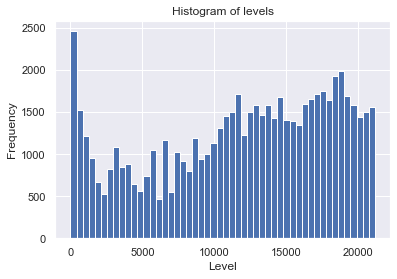
Plot of counts for backward topological levels
level_counts=graph_info_df['level'].value_counts()
level_counts_df=pd.DataFrame({'level counts': level_counts})
level_counts_df.index.name='level'
level_counts_df.sort_index(inplace=True)
level_counts_df.plot()
plt.title('%s commit graph - number of nodes with given level' %
'git.git')
plt.xlabel('level of node / vertex')
plt.ylabel('number of nodes / vertices')
plt.show()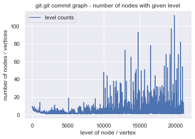
Histogram of counts for backward topological levels
level_counts=graph_info_df['level'].value_counts()
plt.title('Histogram of level counts\n'+'Number of levels with given count of nodes')
plt.xlabel('Level value count\n'+'number of commits with given level')
level_counts.plot.hist(bins=50)
level_counts.describe()count 21137.000000
mean 3.019776
std 3.477064
min 1.000000
25% 1.000000
50% 2.000000
75% 4.000000
max 112.000000
Name: level, dtype: float64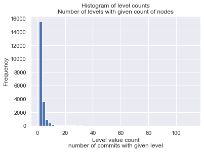
Sanity checking the computed level counts; nodes with backward topological level of zero are sink nodes, with out-degree of 0.
Thus the number of nodes with level of 0 should be equal to number of nodes with out-degree of 0.
# sanity checking level counts
print('git.git commit graph')
graph = graph_git
sinks =[n for n in graph if graph.out_degree(n) == 0]
sources=[n for n in graph if graph.in_degree(n) == 0]
print('there are {:3d} nodes with in-degree of 0'.format(len(sources)))
print('there are {:3d} nodes with out-degree of 0: {}'.format(len(sinks),sinks))
print('there are {:3d} nodes with level of 0'.format(level_counts.at[0]))
graph_info_df[graph_info_df['level']==0]git.git commit graph
there are 3 nodes with in-degree of 0
there are 9 nodes with out-degree of 0: ['7d77f2e9c', '1bd90415d', '0ca71b373', '16d6b8ab6', 'cb07fc2a2', '161332a52', '2744b2344', '1db95b00a', 'e83c51633']
there are 9 nodes with level of 0| level | in degree | out degree | degree | f_min | min | post | |
|---|---|---|---|---|---|---|---|
| e83c51633 | 0 | 1 | 0 | 1 | 1 | 1 | 1 |
| 1db95b00a | 0 | 1 | 0 | 1 | 799 | 799 | 799 |
| 2744b2344 | 0 | 1 | 0 | 1 | 1149 | 1149 | 1149 |
| 161332a52 | 0 | 1 | 0 | 1 | 5044 | 5044 | 5044 |
| cb07fc2a2 | 0 | 1 | 0 | 1 | 8137 | 8137 | 8137 |
| 16d6b8ab6 | 0 | 1 | 0 | 1 | 10300 | 10300 | 10300 |
| 0ca71b373 | 0 | 1 | 0 | 1 | 28384 | 28384 | 28384 |
| 1bd90415d | 0 | 1 | 0 | 1 | 61749 | 61749 | 61749 |
| 7d77f2e9c | 0 | 1 | 0 | 1 | 62308 | 62308 | 62308 |
Visualizing in-degree and out-degree in git.git commit graph
graph_info_df[['in degree','out degree']].hist(bins=10)
plt.show()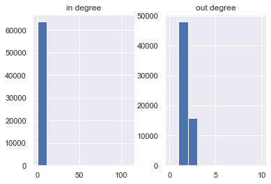
graph_info_df.hist(column=['in degree','out degree'],bins=10,range=(0,10))
plt.show()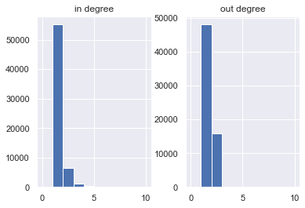
graph_info_df[['in degree','out degree']].plot.hist(bins=51,alpha=0.4,range=(0,50))
plt.show()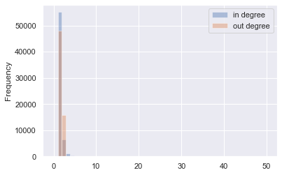
For a graph that follows the power law (for example small-world or scale-free graphs), the distribution of degrees should be a straight line on log-log scale.
For example the plot below (taken from the KONECT handbook, Figure 7a) shows the degree distribution and cumulative degree distribution for the Wikipedia election network (EL).
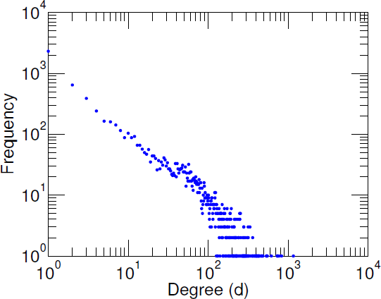
Below there is the same graph for the commit graph of the git.git repository
degree_count_df=graph_info_df['degree'].value_counts(sort=False)\
.to_frame(name='Frequency').rename_axis('degree')\
.sort_index()
degree_count_df['Degree (d)'] = degree_count_df.index
degree_count_df.plot(kind='scatter',x='Degree (d)',y='Frequency',color='#0000ff',
figsize=(8,7),logx=True,logy=True,
title='git.git commit graph')
sns.set_style('ticks', {"xtick.major.size": 20, "ytick.major.size": 20})
plt.xlim([.8, 1e4])
plt.ylim([1., 7e4])
plt.show()
#degree_count_df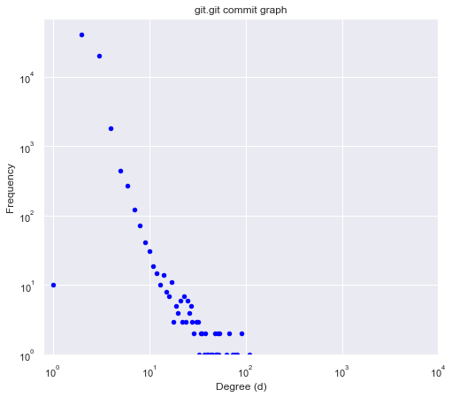
Note that degrees span the range up to around \(10^2\) in the case of git.git commit graph, not \(10^4\) of the Wikipedia elections network. Note also that degree of 1 is an outlier; it does not lie on the line through other points.
Below there is in/outdegree comparison plot for the git.git commit graph
graph_info_df| level | in degree | out degree | degree | f_min | min | post | |
|---|---|---|---|---|---|---|---|
| e83c51633 | 0 | 1 | 0 | 1 | 1 | 1 | 1 |
| 8bc9a0c76 | 1 | 1 | 1 | 2 | 1 | 1 | 2 |
| e497ea2a9 | 2 | 1 | 1 | 2 | 1 | 1 | 3 |
| bf0c6e839 | 3 | 1 | 1 | 2 | 1 | 1 | 4 |
| 19b2860cb | 4 | 1 | 1 | 2 | 1 | 1 | 5 |
| ... | ... | ... | ... | ... | ... | ... | ... |
| e6d102643 | 21094 | 1 | 2 | 3 | 1 | 63662 | 63825 |
| 4c6c5054a | 21095 | 1 | 2 | 3 | 1 | 63662 | 63826 |
| f29945cb3 | 21096 | 1 | 2 | 3 | 1 | 63662 | 63827 |
| b16af9417 | 21097 | 1 | 2 | 3 | 1 | 63662 | 63828 |
| 45daf8777 | 21098 | 0 | 2 | 2 | 1 | 63662 | 63829 |
63829 rows × 7 columns
grid=sns.relplot(data=graph_info_df,x='out degree',y='in degree',
kind='scatter',color='#0000ff')
ax=grid.axes[0][0]
ax.set_title('git.git commit graph')
#ax.set_xscale('log')
#ax.set_yscale('log')
plt.show()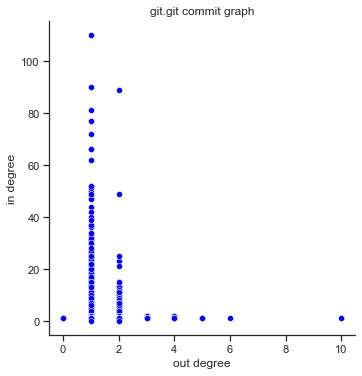
Visualizing min-post intervals in git.git commit graphs
graph_info_df.hist(column=['f_min','min'],bins=20)
graph_info_df[['f_min','min']].plot.hist(bins=50,alpha=0.5)
plt.show()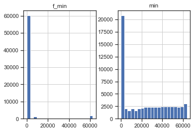
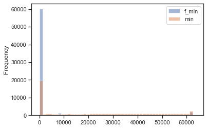
Normalized intervals (interval divide by post-visit order number)
graph_info_df['|interval|']=graph_info_df['post'] - graph_info_df['min']
graph_info_df['|interval|/post']=graph_info_df['|interval|']/graph_info_df['post']
graph_info_df['|f_interval|']=graph_info_df['post'] - graph_info_df['f_min']
graph_info_df['|f_interval|/post']=graph_info_df['|f_interval|']/graph_info_df['post']
graph_info_df| level | in degree | out degree | degree | f_min | min | post | |interval| | |interval|/post | |f_interval| | |f_interval|/post | |
|---|---|---|---|---|---|---|---|---|---|---|---|
| e83c51633 | 0 | 1 | 0 | 1 | 1 | 1 | 1 | 0 | 0.000000 | 0 | 0.000000 |
| 8bc9a0c76 | 1 | 1 | 1 | 2 | 1 | 1 | 2 | 1 | 0.500000 | 1 | 0.500000 |
| e497ea2a9 | 2 | 1 | 1 | 2 | 1 | 1 | 3 | 2 | 0.666667 | 2 | 0.666667 |
| bf0c6e839 | 3 | 1 | 1 | 2 | 1 | 1 | 4 | 3 | 0.750000 | 3 | 0.750000 |
| 19b2860cb | 4 | 1 | 1 | 2 | 1 | 1 | 5 | 4 | 0.800000 | 4 | 0.800000 |
| ... | ... | ... | ... | ... | ... | ... | ... | ... | ... | ... | ... |
| e6d102643 | 21094 | 1 | 2 | 3 | 1 | 63662 | 63825 | 163 | 0.002554 | 63824 | 0.999984 |
| 4c6c5054a | 21095 | 1 | 2 | 3 | 1 | 63662 | 63826 | 164 | 0.002569 | 63825 | 0.999984 |
| f29945cb3 | 21096 | 1 | 2 | 3 | 1 | 63662 | 63827 | 165 | 0.002585 | 63826 | 0.999984 |
| b16af9417 | 21097 | 1 | 2 | 3 | 1 | 63662 | 63828 | 166 | 0.002601 | 63827 | 0.999984 |
| 45daf8777 | 21098 | 0 | 2 | 2 | 1 | 63662 | 63829 | 167 | 0.002616 | 63828 | 0.999984 |
63829 rows × 11 columns
graph_info_df.describe()| level | in degree | out degree | degree | f_min | min | post | |interval| | |interval|/post | |f_interval| | |f_interval|/post | |
|---|---|---|---|---|---|---|---|---|---|---|---|
| count | 63829.000000 | 63829.000000 | 63829.000000 | 63829.000000 | 63829.000000 | 63829.000000 | 63829.000000 | 63829.000000 | 63829.000000 | 63829.000000 | 63829.000000 |
| mean | 11774.655439 | 1.248085 | 1.248085 | 2.496169 | 2122.979116 | 23913.162168 | 31915.000000 | 8001.837832 | 0.303827 | 29792.020884 | 0.947877 |
| std | 6198.793361 | 1.556817 | 0.436128 | 1.602244 | 10631.734068 | 21750.776061 | 18425.989503 | 15664.880755 | 0.458586 | 18603.735072 | 0.212082 |
| min | 0.000000 | 0.000000 | 0.000000 | 1.000000 | 1.000000 | 1.000000 | 1.000000 | 0.000000 | 0.000000 | 0.000000 | 0.000000 |
| 25% | 7003.000000 | 1.000000 | 1.000000 | 2.000000 | 1.000000 | 1.000000 | 15958.000000 | 1.000000 | 0.000037 | 13660.000000 | 0.999923 |
| 50% | 12695.000000 | 1.000000 | 1.000000 | 2.000000 | 1.000000 | 21878.000000 | 31915.000000 | 7.000000 | 0.000282 | 29954.000000 | 0.999966 |
| 75% | 17120.000000 | 1.000000 | 1.000000 | 3.000000 | 1.000000 | 43554.000000 | 47872.000000 | 7365.000000 | 0.999864 | 45942.000000 | 0.999978 |
| max | 21136.000000 | 110.000000 | 10.000000 | 111.000000 | 62308.000000 | 63662.000000 | 63829.000000 | 61747.000000 | 0.999984 | 63828.000000 | 0.999984 |
graph_info_df.hist(column=['min'],bins=50,color='m')
graph_info_df.hist(column=['min'],bins=50,log=True,color='m')
graph_info_df.hist(column=['f_min'],bins=50,color='#800080')
graph_info_df.hist(column=['f_min'],bins=50,log=True,color='#800080')
plt.show()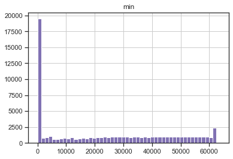
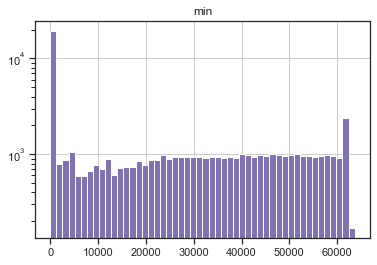
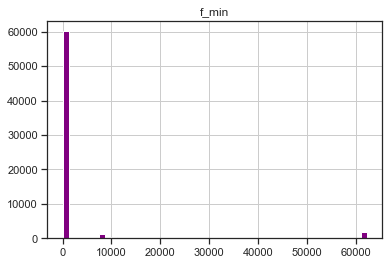
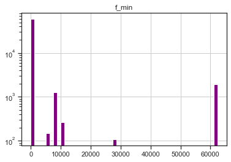
graph_info_df.hist(column=['|interval|'],bins=50,log=True)
graph_info_df.hist(column=['|interval|/post'],bins=50,log=True)
plt.show()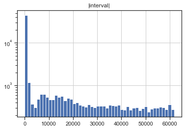
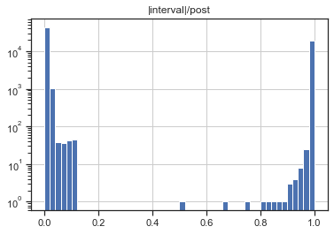
graph_info_df['|interval|/post'].plot.kde(bw_method=0.05,ind=np.linspace(0,1,200))
plt.title('kernel density estimator, bw=0.05, logscale')
plt.xlabel('|interval|/post')
plt.gca().set_yscale("log", nonpositive='clip')
plt.show()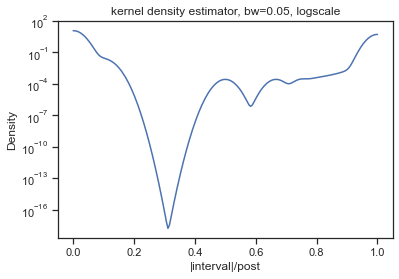
graph_info_df.hist(column=['|interval|/post'],bins=40,log=True)
graph_info_df['|interval|/post'].plot.kde(ind=np.linspace(0,1,500),color='k')
plt.title('histogram of relative size of the min-post tree interval\n'+'kernel density estimator, logscale')
plt.xlabel('|interval|/post')
plt.gca().set_yscale("log", nonpositive='clip')
plt.show()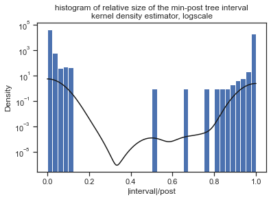
graph_info_df.hist(column=['|f_interval|'],bins=50,color='g')
graph_info_df.hist(column=['|f_interval|/post'],bins=50,color='c')
graph_info_df.hist(column=['|f_interval|/post'],bins=50,log=True,color='c')
plt.show()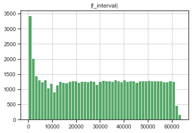
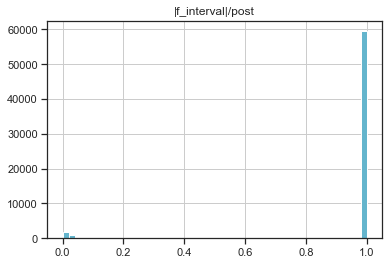
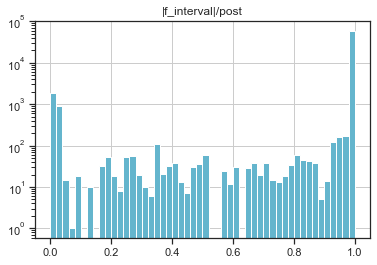
Summary of findings
Strangely,smallest files size this time is given when storing using the HDF5 (with compresslevel=6) format, which is also 2nd fastest.
Saving DataFrame using the Parquet format is fastest, but this time it gives the largest size of the file (except for git-commit_graph.hdf5, which stores both commit graph in edge list format, and per-node information)
Saving as *.pickle.gz or *.csv.gz is slowest and second slowest, while both being in the middlle with respect to file sizes (the pickle-based format gives smaller file size).